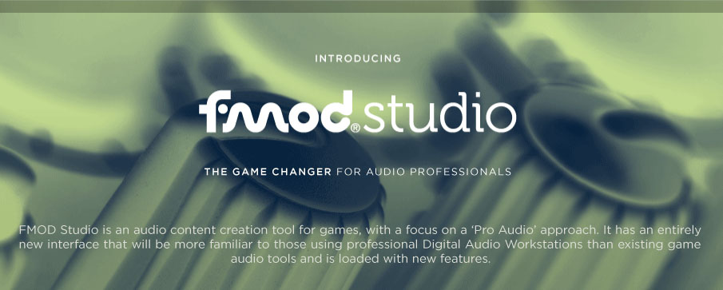

Firelight Technologies FMOD Studio API

FMOD Studio is an audio content creation tool for games, with a focus on a Pro Audio approach. It has an entirely new interface that will be more familiar to those using professional Digital Audio Workstations than existing game audio tools and is loaded with powerful features.
The What's New In 1.07 page highlights the new features of Studio API for this release.
The Basic Information page basic platform information to help getting started.
Find out more information at our Questions and Answers database, or contact us directly at support@fmod.com.